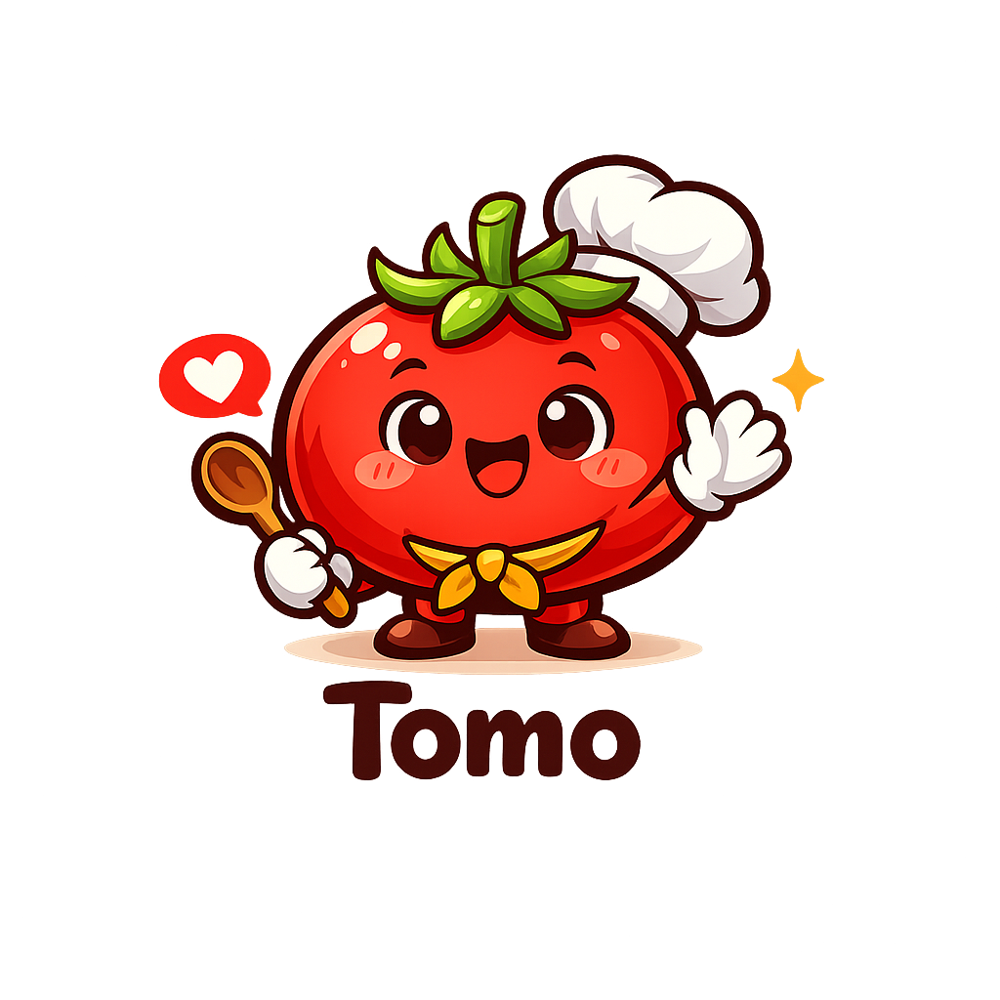

Tomo
Food for Every Mood
Tap to reveal
Looks like comfort is calling today. I’ll find something warm, familiar, and easy to love.
How are you feeling?
Today’s Picks
Breakfast ideas
Tomo Pantry
What’s in your kitchen?
Pick ingredients and Tomo will suggest real dishes.Tomo Collections
Discover curated recipes for every kitchen.
🍅 Pair dal with rice or roti for a more complete protein plate.